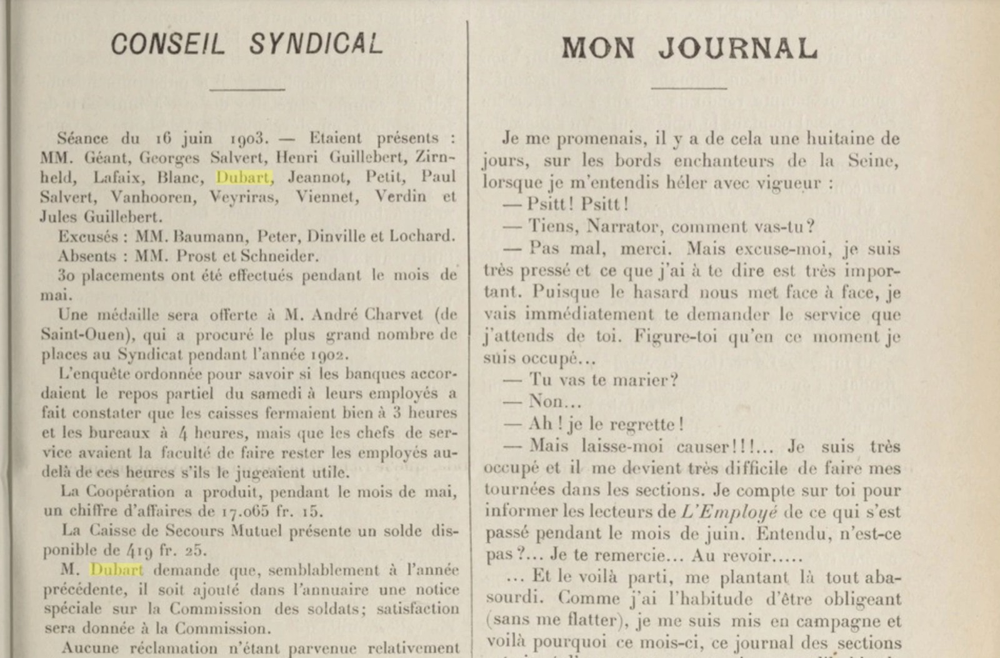

Presse · 25/07/1903 (séance du 16/06/1903 ; séances de la Commission d'études 1902-1903, dates non précisées)
« L'Employé » (Paris), numéro du 25 juillet 1903 : « Conseil syndical — Séance du 16 juin 1903 » et rapport de la Commission d'études (session 1902-1903), « L'Action syndicale dans ses diverses manifestations »
Ce document établit
- Un « Dubart » (prénom non donné) figure parmi les 15 conseillers présents à la séance du Conseil syndical du Syndicat des employés du commerce et de l'industrie du 16 juin 1903 (excusés : Baumann, Peter, Dinville, Lochart ; absents : Prost, Schneider), publiée dans L'Employé du 25 juillet 1903. non vérifié A0923
« Étaient présents : MM. Géant, Georges Salvert, Henri Guillebert, Zirnheld, Lafaix, Blanc, Dubart, Jeannot, Petit, Paul Salvert, Vanhooren, Veyriras, Viennet, Verdin et Jules Guillebert. » (lecture incertaine : non)
- À la séance du Conseil syndical du 16 juin 1903, « M. Dubart » demande que, comme l'année précédente, une notice spéciale sur la Commission des soldats soit ajoutée dans l'annuaire du Syndicat ; il est indiqué que satisfaction sera donnée à la Commission (L'Employé, 25 juillet 1903). non vérifié A0924
« M. Dubart demande que, semblablement à l'année précédente, il soit ajouté dans l'annuaire une notice spéciale sur la Commission des soldats; satisfaction sera donnée à la Commission. » (lecture incertaine : non)
- Dans le rapport de la Commission d'études du Syndicat (session 1902-1903), à propos du 3e vœu (faculté pour les syndicats de faire des actes de commerce), « MM. Dubart et Texier ajoutent que les coopératives de consommation sont si peu commerçantes qu'elles ne peuvent pas être déclarées en faillite » (L'Employé, 25 juillet 1903) ; date de la séance non précisée (après la conférence du 15 mai 1903). non vérifié A0925
« MM. Dubart et Texier ajoutent que les coopératives de consommation sont si peu commerçantes qu'elles ne peuvent pas être déclarées en faillite. » (lecture incertaine : non)
- Dans le même rapport, à propos du 5e vœu (représentation des membres en justice par le syndicat, sans mandat spécial) et de l'amendement de M. Le Boulanger (« après mandat spécial »), « M. Dubart demande comment l'on procéderait si plusieurs syndicats se présentaient pour défendre un seul individu » (L'Employé, 25 juillet 1903) ; date de la séance non précisée. non vérifié A0926
« M. Dubart demande comment l'on procéderait si plusieurs syndicats se présentaient pour défendre un seul individu » (lecture incertaine : non)
- Contexte de la source (non assertion sur Léon) : L'Employé du 25 juillet 1903 rapporte (1) que le Conseil du 16 juin 1903 a enregistré 30 placements en mai, décidé une médaille à André Charvet (Saint-Ouen) et noté, après enquête, que dans les banques les caisses ferment à 3 h et les bureaux à 4 h le samedi mais que les chefs de service peuvent garder les employés ; (2) que la Commission d'études 1902-1903 (thème « L'Action syndicale dans ses diverses manifestations », huit conférences du 17 octobre au 15 mai) a examiné cinq vœux de Zirnheld sur la loi de 1884 (liberté syndicale élargie, propriété sans restriction, actes de commerce, intervention dans les contrats de travail, représentation en justice), avec commentaire par Étienne Martin-Saint-Léon du projet de loi Millerand sur la capacité des syndicats. vérifié A0927
« Séance du 16 juin 1903 : « 3o placements ont été effectués pendant le mois de mai. » ; « les caisses fermaient bien à 3 heures et les bureaux à 4 heures, mais que les chefs de service avaient la faculté de faire rester les employés au-delà de ces heures » ; « Puis la parole est donnée à M. Etienne Martin-Saint-Léon, qui nous fait un commentaire remarquable du projet de loi Millerand relatif à l'extension de la capacité des syndicats. » » (lecture incertaine : non)
Transcription
recherches/generation-3/leon-apres-1900/enquete.md
Personnes concernées
Six captures d'écran de Jessica ; date du numéro donnée par Jessica ; adresse Gallica non relevée. Prénom de Dubart jamais donné ; nom surligné sur les captures. Relues : conseil-16-juin, commission-etudes-3 et -4 (passages décisifs) ; les autres captures transcrites dans enquete.md.
Continuer
Toutes les archives →Document précédentTable des successions et absences, 8e bureau (9e et 20e arr.), lettre D, 01/01/1902-31/07/1907 : mai 1903, n° 50 (Dubart Edmond)1903Document suivant« L'Employé » (Paris), numéro du 25 février 1903 (13e année, n° 106) : extraits de résultats de recherche plein texte « Dubart » (Conseil syndical, séance du 20 janvier 1903 ; Commission de contrôle ; remerciements pour places)25/02/1903 (séance du 20/01/1903)